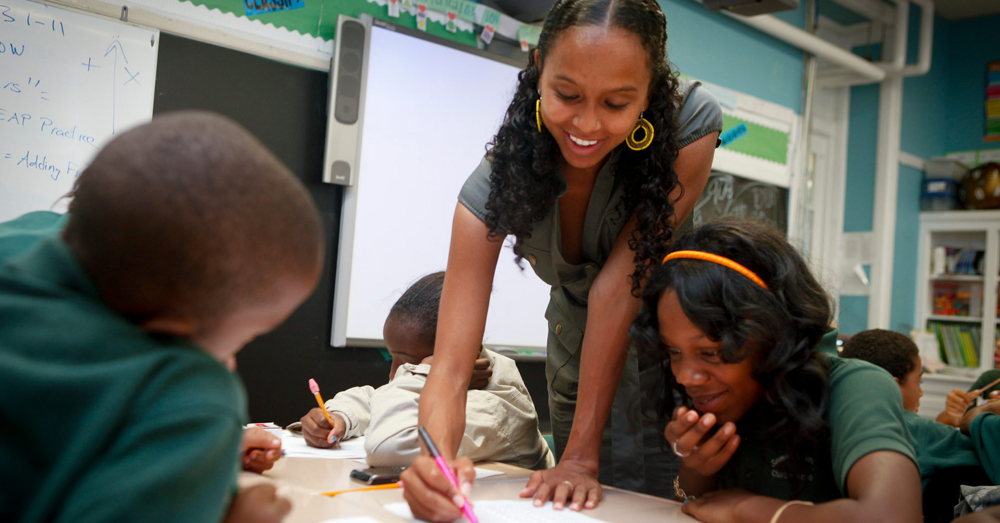
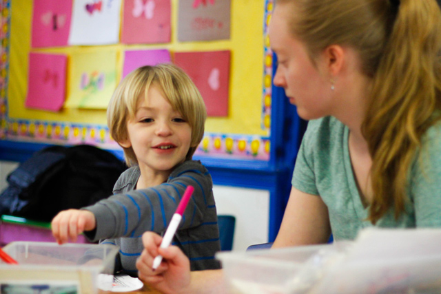

Tate College of Technology

The Tate College of Technology is known for its cutting edge curriculum that merges theory with intensive hands on practice in the computer science industry. Courses are structured around collaboration, problem solving, and creative prototyping.
Core Departments
- Computer Science
- Cybersecurity
- Game Development
- Web Development
- Information Systems
- Robotics
Events & Opportunities

Tate Hackathon
- A 48 hour hackathon with themes ranging from social good to machine learning.
- Corporate sponsors include Tesla, Google, and NVIDIA.
Robotics Showdown
- Robotics tournament with categories such as drone racing, autonomous pathfinding, and battle bots.
AppCraft Challenge
- A semesterly mobile app competition focused on solving local New York problems.
- Winning apps often get seed funding from local businesses and investors.
GreenTech Innovation Expo
- Students prototype and pitch sustainable technologies judged by industry green tech leaders.
- Top prototype has the opportunity to go into mock production.
Staff & Innovators
- Dr. Kaia Moreno — Dean of Computer Science Research
- Prof. Elias Boone — Head of Robotics Lab
- Dr. Anika Javed — Cybersecurity Chair
- Dr. Ryker Tan — Game Development Head
- Prof. Luna Mehta — Green Tech Visionary
Lewis College of Eduction
The Lewis College of Education is rooted in the belief that empowering future generations starts with passionate educators. Mixing educational theory with immersive fieldwork, ensures students graduate with the skills to lead and inspire. Courses emphasize real world classroom experience, community impact, and innovative teaching strategies.
Core Departments
- Early Childhood Education
- Elementary and Secondary Education
- Special Education
- Community and Social Justice Education
- Educational Leadership and Policy
- Counseling and Student Services
Real World Opportunities
Early Fieldwork Placements
- Students begin classroom observations and assistant teaching roles as early as their second semester, working closely with mentor teachers in local schools.
Student Teaching Residencies
- Full semester residencies in diverse school settings, providing immersive experience in lesson planning, classroom management, and instruction.
Special Education Practicum
- Hands on work in inclusive classrooms and specialized centers, focusing on adaptive learning methods and IEP (Individualized Education Program) development.
Community Literacy Programs
- Students volunteer to lead after school reading initiatives, literacy tutoring, and book drives in underserved neighborhoods.
Staff & Innovators
- Dr. Selene Crawford — Dean of Educational Research and Community Engagement
- Dr. Imara Holt — Director of Special Education Programs
- Dr. Benjamin Adler — Educational Policy and Leadership Expert
- Prof. Camila Soto — Advocate for Social Justice and Community Education
- Prof. Julian Reyes — Student Teaching Chair